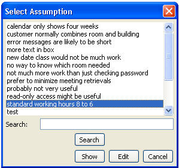
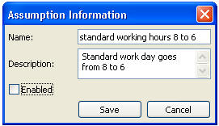
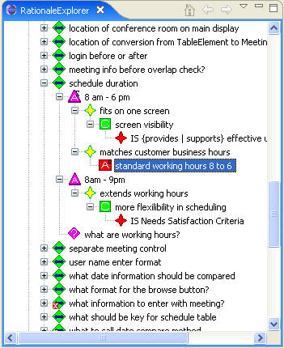

One of the features unique to SEURAT and the RATSpeak representation is the explicit recording of assumptions. Assumptions can become invalid over time, which is a key reason for why software needs to continually evolve. It is important to re-examine assumptions during maintenance to ensure that they still hold. SEURAT lets the user disable an assumption to see the impact that has on the rest of the rationale.
The following figure shows a list of all assumptions captured for the Conference Room Scheduling System with the assumption “standard working hours 8 to 6” highlighted.

This assumption can be edited from this display and then disabled, as shown in the following figure.

Disabling the assumption causes the alternative that refers to it to be re-evaluated again. This results in a warning for the decision “schedule duration.” The following figure shows the Rationale Explorer with the disabled assumption highlighted.
